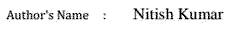
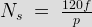
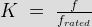
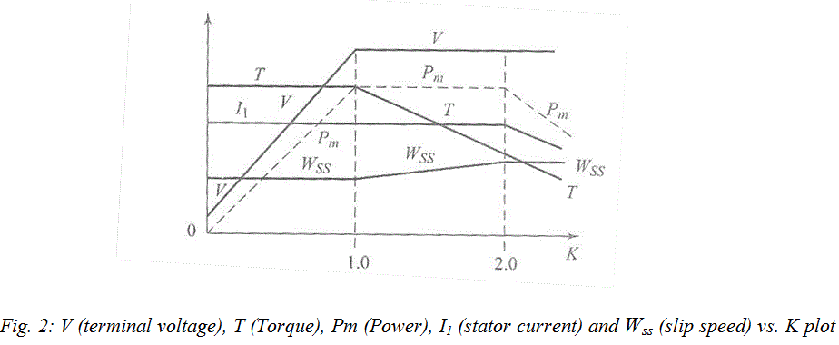
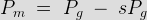
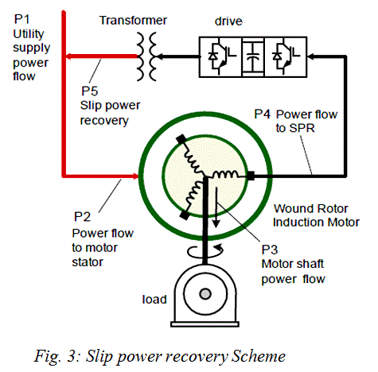

Rectifier Stage
Inverter Stage
Control System
Induction Motor Characteristic under Variable Frequency Drive
Merits of using Variable Frequency Drives
Energy Saving
Increased Reliability
Speed Variations
Soft Starting
Extended Machine Life and Less Maintenance
High Power Factor
Slip Power Recovery
Applications of Variable Frequency Drive
It is interesting to know that the first A.C. drive (400 HP) based on thyratron cycloconverter-fed WRIM was installed in 1932 by F.E. Alexanderson of General Electric in the Logan Power Station of Pacific Gas and Electric Company. From then industrial drives have evolved rapidly by dedicated effort of many scientists and engineers all over the world resulting in development of advanced drive technology such as Variable Frequency Drive(VFD). VFD is a power electronics based device which converts a basic fixed frequency, fixed voltage sine wave power (line power) to a variable frequency, variable output voltage used to control speed of induction motor(s). It regulates the speed of a three phase induction motor by controlling the frequency and voltage of the power supplied to the motor.

Since the number of pole is constant the speed Ns can be varied by continuously changing frequency.
Generalized Motor Control through Variable Frequency Drive
Working of Variable Frequency Drive
Any Variable Frequency Drive or VFD incorporates following three stages for controlling a three phase induction motor.
Rectifier Stage
A full-wave power diode based solid-state rectifier converts three-phase 50 Hz power from a standard 220, 440 or higher utility supply to either fixed or adjustable DC voltage. The system may include transformers for high voltage system.
Inverter Stage
Power electronic switches such as IGBT, GTO or SCR switch the DC power from rectifier on and off to produce a electric current or voltage waveform at the required new frequency. Presently most of the voltage source inverters (VSI) use pulse width modulation (PWM) because the electric current and voltage waveform at output in this scheme is approximately a sine wave. Power Electronic switches such as IGBT; GTO etc. switch DC voltage at high speed, producing a series of short-width pulses of constant amplitude. Output voltage is varied by varying the gain of the inverter. Output frequency is adjusted by changing the number of pulses per half cycle or by varying the period for each time cycle. The resulting electric current in an induction motor simulates a sine wave of the desired output frequency. The high speed switching action of a PWM inverter results in less waveform distortion and hence decreases harmonic losses.
Control System
Its function is to control output voltage i.e. voltage vector of inverter being fed to motor and maintain a constant ratio of voltage to frequency (V/Hz). It consists of an electronic circuit which receives feedback information from the driven motor and adjusts the output voltage or frequency to the desired values. Control system may be based on SPWM (Sine Wave PWM), SVPWM (Space Vector modulated PWM) or some soft computing based algorithm.
Induction Motor Characteristic under Variable Frequency Drive
In an induction motor voltage induced in stator, E is proportional to the product of the slip frequency and the air gap flux. The terminal voltage can be considered proportional to the product of the slip frequency and flux, if stator drop is neglected. Any reduction in the supply frequency without a change in the terminal voltage causes an increase in the air gap flux which will cause magnetic saturation of motor. Also the torque capability of motor is decreased. Hence while controlling a motor with the help of VFD or Variable Frequency Drive we always keep the V/f ratio constant.
Now define variable ‘K’ as,

For operation below K < 1 i.e. below rated frequency we have constant flux operation. For this we maintain constant magnetization electric current Im for all operating points.
For K > 1 i.e. above rated frequency we maintain terminal voltage Vrated constant. In this field is weakened in the inverse ratio of per unit frequency ‘K’.
For values of K = 1 we have constant torque operation and above that we have constant power application.

Merits of using Variable Frequency Drives
Energy Saving
Primary function of VFD in industry is to provide smooth control along with energy savings. The variable speed motor drive system is more efficient than all other flow control methods including valves, turbines, hydraulic transmissions, dampers, etc. Energy cost savings becomes more pronounced in variable-torque ID fan and pump applications, where the load’s torque and power is directly proportional to the square and cube of the speed respectively.
Increased Reliability
Adjustable speed motor-drive systems are more reliable than traditional mechanical approaches such as using valves, gears, louvers or turbines to control speed and flow. Unlike mechanical control system they don’t have any moving parts hence they are highly reliable.
Speed Variations
Beyond energy saving, applications such as crushers, conveyors and grinding mills can use the motor and VFD’s packages to provide optimal speed variations. In some crucial applications, the operating speed range can be wide, which a motor supplied with a constant frequency power source cannot provide. In the case of conveyors and mills, a VFD and motor system can even provide a “crawl” speed foe maintenance purposes eliminating the need for additional drives.
Soft Starting
When Variable Frequency Drives start large motors, the drawbacks associated with large inrush electric current i.e. starting electric current (winding stress, winding overheating and voltage dip on connected bus) is eliminated. This reduces chances of insulation or winding damage and provides extended motor life.
Extended Machine Life and Less Maintenance
The VFD’s greatly reduce wear to the motor, increase life of the equipment and decrease maintenance costs. Due to optimal voltage and frequency control it offers better protection to the motor from issues such as electro thermal overloads, phase faults, over voltage, under voltage etc. When we start a motor (on load) with help of a VFD, the motor is not subjected to “instant shock” hence there is less wear and tear of belt, gear and pulley system.
High Power Factor
Power converted to rotation, heat, sound, etc. is called active power and is measured in kilowatts (kW). Power that charges builds magnetic fields or charges capacitor is called reactive power and is measured in kVAR. The vector sum of the kW and the kVAR is the Apparent Power and is measured in KVA. Power factor is the ratio of kW/KVA. Typical AC motors may have a full load power factor ranging from 0.7 to 0.8. As the motor load is reduced, the power factor becomes low. The advantage of using VFD’s is that it includes capacitors in the DC Bus itself which maintains high power factor on the line side of the Variable Frequency Drive. This eliminates the need of additional expensive capacitor banks.
Slip Power Recovery
The fundamental power given to rotor by stator is called air gap power Pg. The mechanical power developed is given by

The term 'sP' is called slip power.

If the slip is very large i.e. speed is low then there is ample waste of power, a common example is kiln drives of cement industry. This power can be saved through slip recovery scheme.In this scheme slip power is first collected through brushes of WRIM. This slip power recovered is then rectified and inverted back to line frequency and is injected into supply through coupling transformer.The scheme is shown in figure below.
Applications of Variable Frequency Drive
- They are mostly used in industries for large induction motor (dealing with variable load) whose power rating ranges from few kW to few MW.
- Variable Frequency Drive is used in traction system. In India it is being used by Delhi Metro Rail Corporation.
- They are also used in modern lifts, escalators and pumping systems.
- Nowadays they are being also used in energy efficient refrigerators, AC’s and Outside-air Economizers.
 by
by